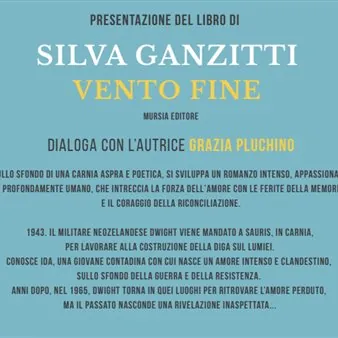

ven 13 nov · dalle 18:30
Vento fine
venerdì 13 novembre 2026 ore 18.30Sala Consiliare di Pasian di Prato (ingresso da via Bonanni) Presentazione del libro: Vento fine di Silva Ganzitti Mursia edizioni Dialogherà con l'Autrice Grazia Pluchino Nordest italiano, 1943. Il militare neozelandese Dwight, fatto…
 Indicazioni
Indicazioni
- Costi e prenotazioni
- Costo non indicato · Prenotazione non indicata
- Programma
- Programma da verificare. Apri la fonte ufficiale per orari e possibili aggiornamenti.
- In caso di maltempo
- Nessuna indicazione specifica pubblicata.
- Note
- Acquisito automaticamente dalla fonte.
L’EVENTO
Descrizione completa
Presentazione del libro: Vento fine di Silva Ganzitti Mursia edizioni Dialogherà con l'Autrice Grazia Pluchino Nordest italiano, 1943. Il militare neozelandese Dwight, fatto prigioniero dagli italiani, viene trasferito in Carnia per lavorare alla costruzione della diga sul torrente Lumiei. Nella solitudine montana di Sauris conosce Ida, una giovane contadina dal carattere fiero e silenzioso. Tra fughe notturne e legami clandestini, la loro storia si intreccia con il fermento della Resistenza e il dolore di un'Italia lacerata. Dopo la guerra, nel 1965, Dwight torna tra le montagne che hanno segnato la sua giovinezza per ritrovare l'amore perduto, ma ad attenderlo ci saranno il peso dei ricordi e una rivelazione capace di cambiare ogni prospettiva sul passato. Sullo sfondo di una Carnia aspra e poetica, si sviluppa un romanzo intenso, appassionato e profondamente umano, che intreccia la forza dell'amore con le ferite della memoria e il coraggio della riconciliazione.
Silva Ganzitti, friulana, vive a Buja, in provincia di Udine. Editor freelance, è direttore artistico di «Incontri a Nordest», festival culturale a cura dell’associazione gemonese Valentino Ostermann. Ama camminare per boschi e colline e il turismo lento. Scrive per riviste cartacee e online e i suoi lavori hanno ricevuto premi e riconoscimenti a livello nazionale. Vento fine è stato fra i finalisti del Premio Neri Pozza 2023
Ingresso libero
Informazioni presso: Biblioteca Civica "Pier Paolo Pasolini" di Pasian di Prat
0432 645957 / biblioteca@comune.pasiandiprato.ud.it
IL PROGRAMMA
Programma e orari
Appuntamenti raccolti dalle fonti elencate. Dove manca un orario, non è ancora disponibile in questa scheda.
Programma pubblicato
- Dal 2026-11-13 al 2026-11-13
INFORMAZIONI UTILI
Prima di partire
- Controllare la fonte prima di partire.
ORGANIZZAZIONE